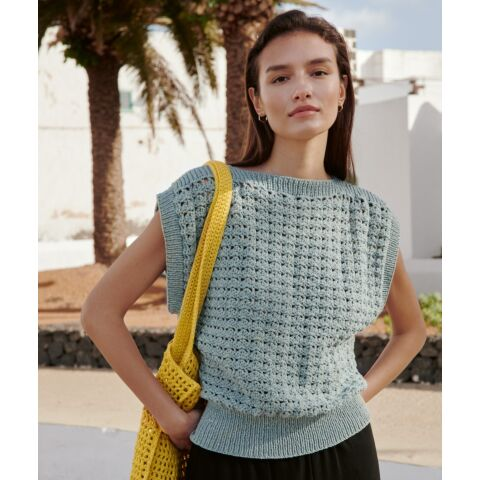
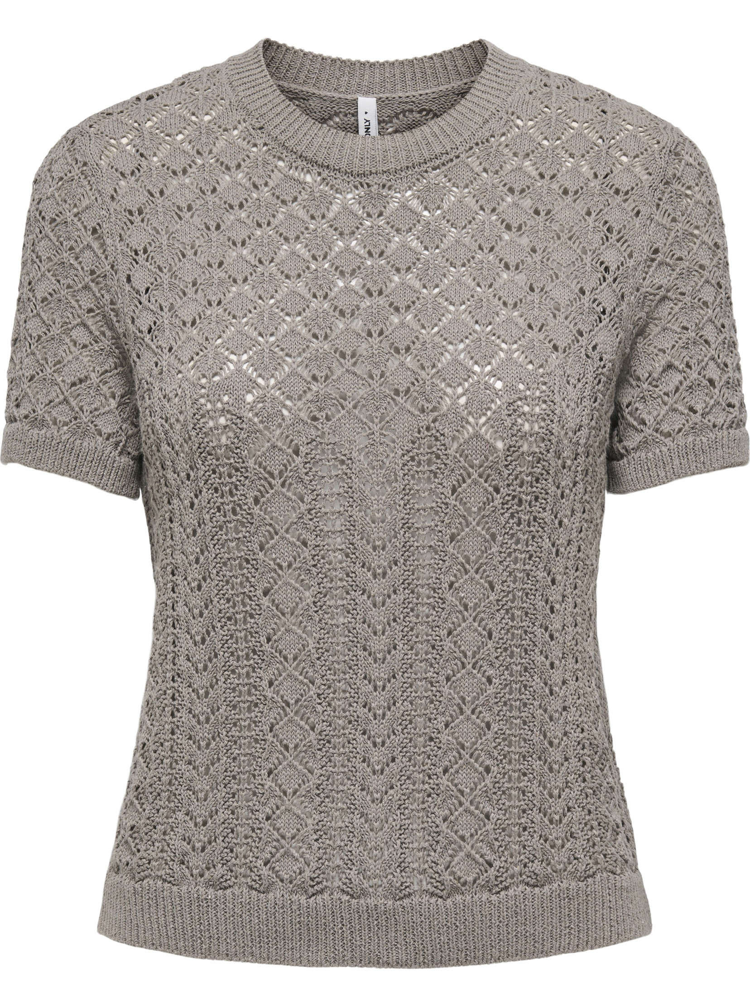
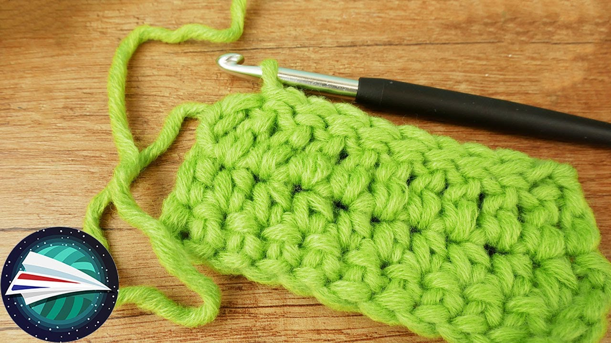
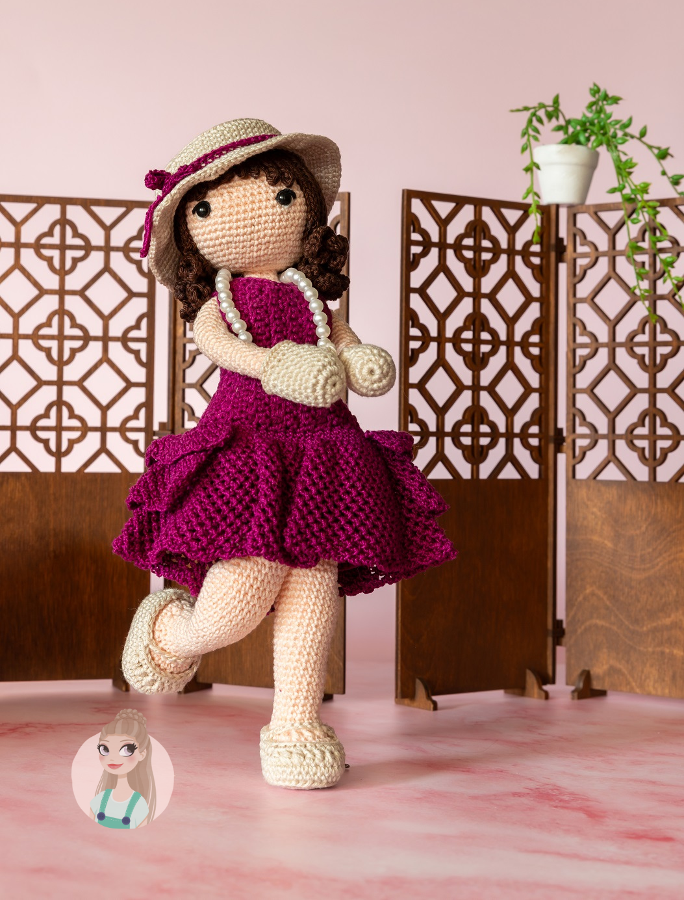

Handgemaakt
Elk kledingstuk wordt met de hand gehaakt en zorgvuldig afgewerkt voor een exclusieve uitstraling.
Handgemaakte gehaakte kleding
Tijdloze stukken met de hand gehaakt in kleine oplages, met aandacht voor detail, zachtheid en pasvorm.
Nieuwe collectie
Ontdek gehaakte kledingstukken die met zorg worden gemaakt voor vrouwen die houden van verfijning, eenvoud en een persoonlijke uitstraling.
Bekijk collectie
Ambacht
Ieder ontwerp ontstaat langzaam en bewust, steek voor steek. Daardoor heeft elk kledingstuk een eigen karakter en voelt het als iets bijzonders dat niet uit een massaproductie komt.
We werken met rustige kleuren, zachte materialen en een moderne afwerking, zodat ieder stuk moeiteloos past in een stijlvolle garderobe.
Waarom kiezen voor ons
Elk kledingstuk wordt met de hand gehaakt en zorgvuldig afgewerkt voor een exclusieve uitstraling.
Onze modellen worden in kleine oplages gemaakt, waardoor ieder stuk bijzonder en persoonlijk blijft.
Voor wie iets extra persoonlijks zoekt, denken we graag mee over maat, kleur en afwerking.
Uitgelicht

Een verfijnde top met rijk patroon en zachte uitstraling, ontworpen voor een rustige en elegante look.
Bekijk product
Een blik op het maakproces waarin structuur, garen en afwerking samenkomen in puur handwerk.
Bekijk product
Een speelse, verfijnde creatie die de ambachtelijke signatuur van het atelier laat zien.
Bekijk productPersoonlijk contact
We bespreken graag je wensen en maken samen een ontwerp dat past bij jouw stijl en gelegenheid.